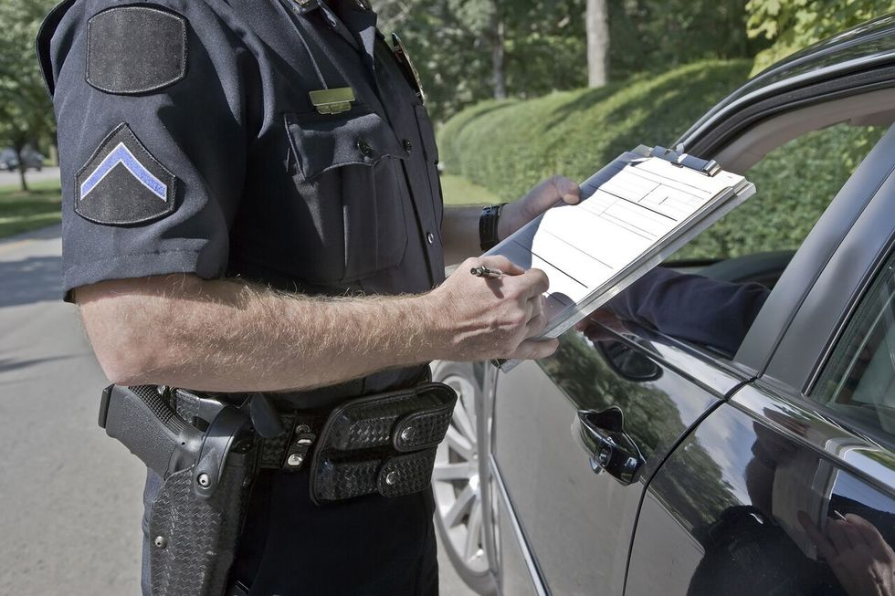
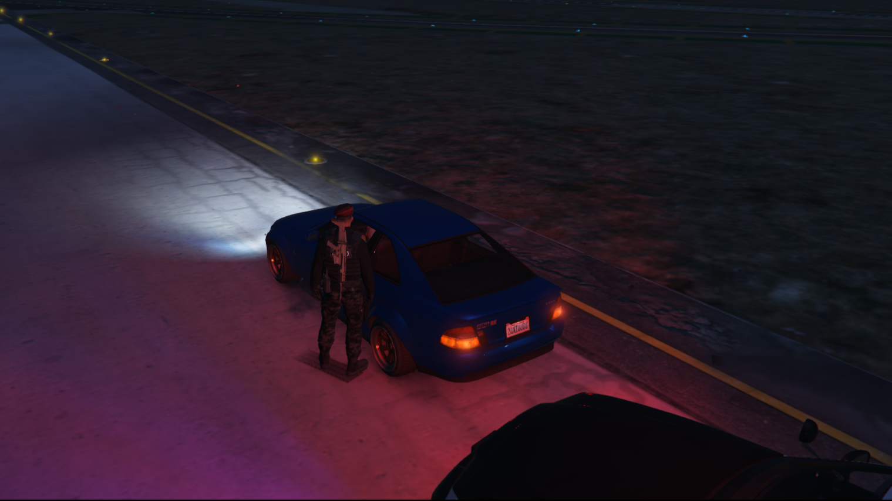
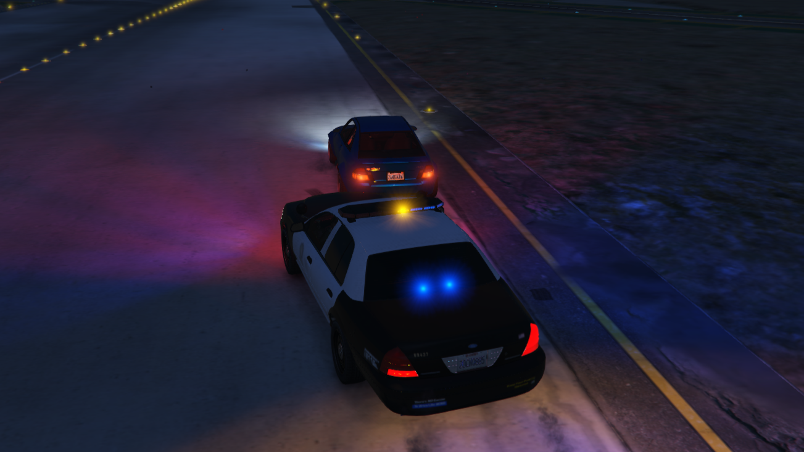
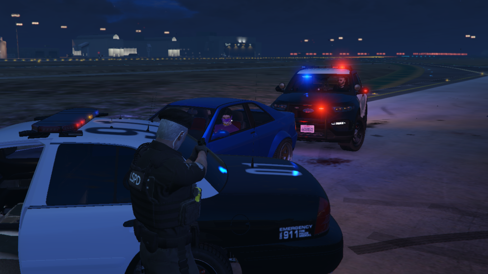
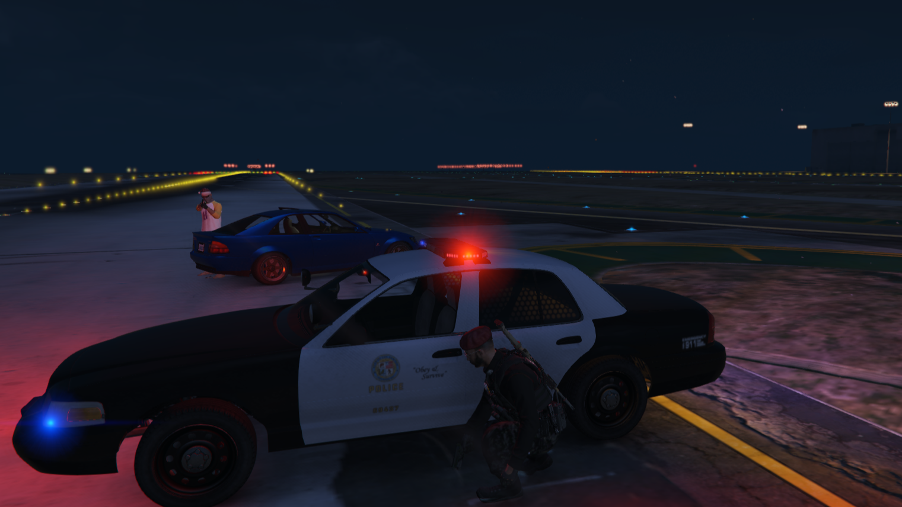
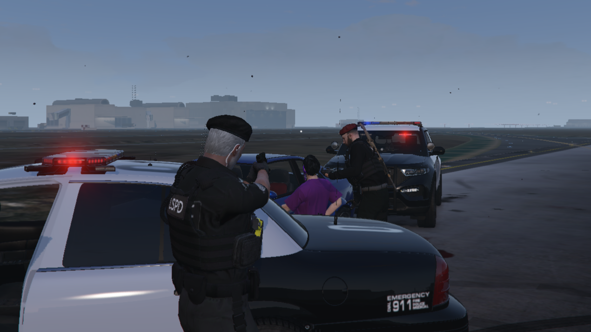
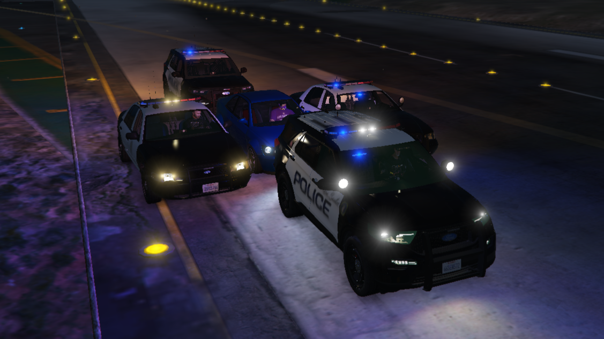

ماتراه هو ليس النتيجة النهائية (قيد التطوير و الصيانة)
الدورة التدريبية للشرطة الولائية
المرحلة رقم 3: التدريب على الإستيقافات
يتم إستيقاف المركبات في حالى إرتكاب مخالفة مرورية او جنائية حيث للإستيقافات أنواع

:الخطوة رقم 3
:بعد تبليغك لمركز العمليات تأتي مرحلة التعامل مع الشخص حيث
يتم الطلب منه الهوية و رخصة المركبة و التأكد من ملكية المركبة
يتم إعلام الشخص بالمخالفة و النقامش معه حول الموقف
(MDT) يتم تحرير المخالفة وفقا لتعليمات جهاز البيانات المحمول

يجب عليك ان تعرف نفسك قبل التعامل مع صاحب المركبة
النوع رقم 1: إستيقاف مروري •
يتم الإستيقاف المروري بعد رصد المركبة باتكاب مخالفة مرورية و يكون كالأتي
:الخطوة رقم 1
يتم تشغيل صافرات الإنذار و المتابعة خلف المركبة الى حين توقف المخالف
في حال توقف الشخص يتم إستقافه مثل ماهو موضح في الصورة تماماً, و من ثم عليك بإبلاغ الشخص بإطفاء محرك المركبة
:الخطوة رقم 2
تبليغ مركز العمليات بالحالة رفقا لبعض من المعلومات و هي
رقم وحدة العسكري
نوع حالة الإستيقاف
نوع المركبة ولون التي تم إستيقافها
إخر اربع ارقام من لوحة المركبة
موقع الإستيقاف
سبب الإستيقاف
البلاغ يكون كلأتي: من 101 الى مركز العمليات جاري إستيقاف سولتان زرقاء باخر اربع ارقام 9876 في الحديقة العامة بسبب قطع إشارة

يجب التاكد من عدم إشتغال محرك المركبة
النوع رقم 2: إستقاف جنائي •
:الخطوة رقم 1
يتم الإستيقاف الجنائي بسابق إرتكاب لمخالفة جنائية من طرف شخصا ما
:في حال رصد مركبة عليها تعميم بمخالفة جنائية, يتم الطلب من سائق المركبة التوقف و إطفاء المحرك و من ثم تبليغ مركز العمليات كالأتي
من 101 الى مركز العمليات حالية امامي مركبة عليها تعميم سرقة بقالة أحتاج وحدة دعم بالقرب من البنك المركزي
بعد وصول الموحدة يأتي زميلك مثل ماهو موضح في الصورة و يقوم بتوجيه السلاح على الشخص و من ثم تقوم بتبليغ الشخص بالنزول من المركبة و رفع الأيدي إتجاه المركبة

101 امامي مركبة بتعميم اطلاق نار في العامة وجه دعم
الخطوة رقم 4: (عند الهروب فقط)
في حال هروب الشخص يتم تحويل الإستيقاف الى حالة هروب و تبليغ مركز العمليات فوراً
تتم مطاردة الشخص تشغيلا لصافرات الإنذار و تحديث الموقع المطاردة كل 15 ثانية
و يكون بلاغ تحول الى الهروب كالأتي: من 101 الى مركز العمليات أخر إستيقاف مروري تحول الى هروب احتاج وحدات دعم

اخر هروب من 101 تحول الى اطلاق نار في العامة
اذا تحول الى طلق نار :وحده + اخر حالة هروب تحولت الى اطلاق نار احتاج و حدات دعم
:الخطوة رقم 2
:مثل ماهو موضح بالصورة يتم الإلقاء القبض على الشخص و سرد له حقوقه و التي هي
تم الإلقاء القبض عليك من الشرطة الولائية بتهمة سرقة بقالة, أي كلام تقوله يسجل ضدك في المحاكمة, يحق لك إلتزام الصمت و تعيين محامي إن وجد

في حل تحول الإستيقاف الى هروب يتم تبليغ مركز العمليات كالأتي: من 101 الى مركز العمليات أخر إستيقاف جنائي تحول الى هروب أحتاج وحدات دعم
النوع رقم 3: إستقاف إجباري •
يتم الإستيقاف الإجباري بعد هروب شخص من إستيقاف جنائي (او رفض شخصا ما بالوقوف)
في حال رصدك لشخص عليه تعميم هروب من إستيقاف جنائي عليك بإستيقاف الشخص و تبليغ مركز العمليات كالأتي
من 101 الى مركز العمليات امامي مركبة عليها تعميم هروب من إستيقاف جنائي أحتاج وحدات دعم بالقرب من المحكمة
في حال وصول الوحدات يتم إستيقاف الشخص مثل ماهو موضح في الصورة

في حال هروب الشخص من الإستيقاف الإجباري يتم إستخدام تقنيات أخرى يتم إعلامك بها لاحقاً